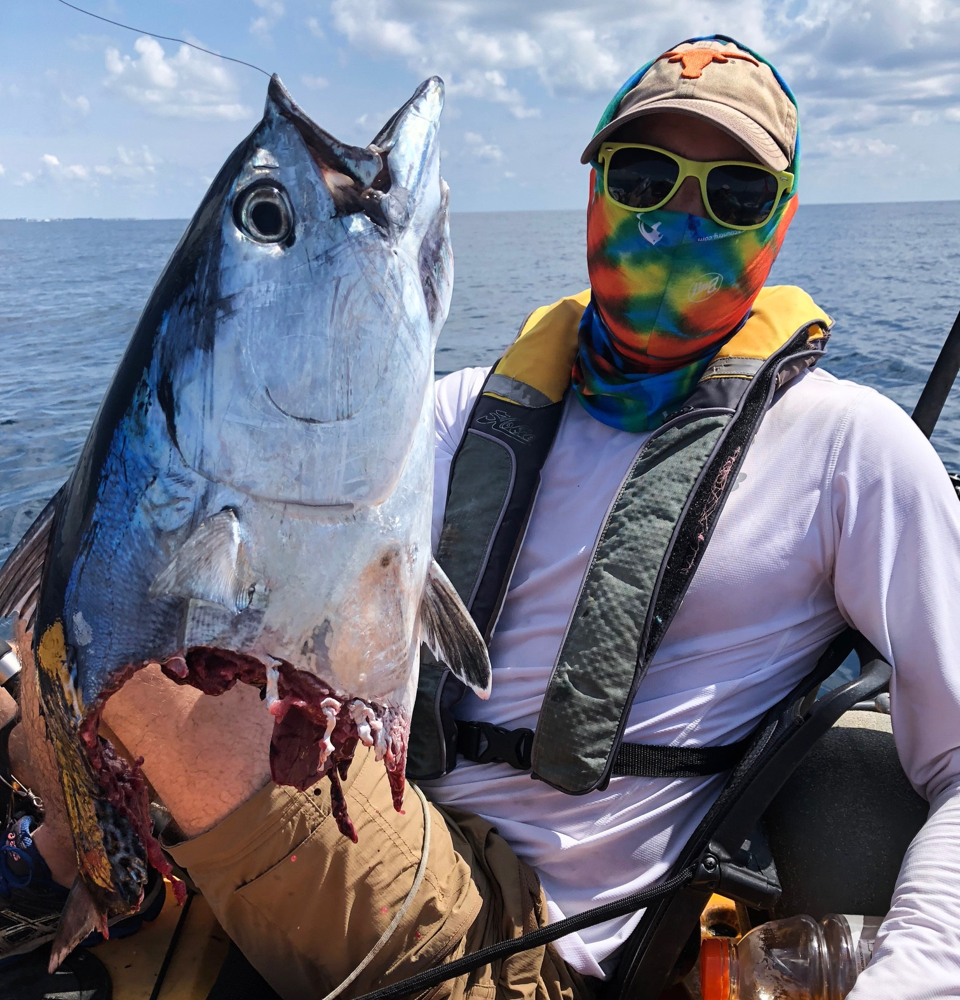

About Me

I was born in New Jersey but grew up in Fort Worth, Texas. After graduating from Southwest High School, I moved to Austin to begin my freshman year at The University of Texas at Austin. I graduated from UT in 2009 with a Bachelor of Business Administration degree and a minor in Accounting.
Upon graduating in 2009, I moved to San Francisco to join Barclays Capital as an Analyst in the healthcare group of the bank’s investment banking division. After completing my first year of the analyst program, I was asked to relocate to the New York City office. As an analyst at Barclays I was fortunate enough to work with Fortune 500 companies, advising them on debt and equity offerings as well as mergers and acquisitions.
After leaving Barclays, I moved to Dallas in 2011 to join Walker Smith Capital, a long/short equity hedge fund managing ~$1.5 billion. In this role, I supported the partners of the firm in identifying and conducting due diligence on publicly traded investment opportunities. Unfortunately the firm shut down in late 2012.
In October 2012 I joined HBK Capital Management, a global multi-strategy hedge fund managing $10 billion. At HBK, I was responsible for sourcing special situation investment opportunities and conducting due diligence on these investments. My team’s mandate was “value plus a catalyst” and we focused on spin-offs, transformative M&A, balance sheet transformations and other unique corporate actions. While at HBK, my team peaked at nearly $2 billion of gross market exposure.
Having a desire to join to be a part of building a company and gain operational experience, I left HBK to join Legacy Heart Care. Legacy is the largest independent provider of external counterpulsation in the country. While at Legacy I have been responsible for all the company’s finance and accounting operations, and have recently taken on billing operations as well.